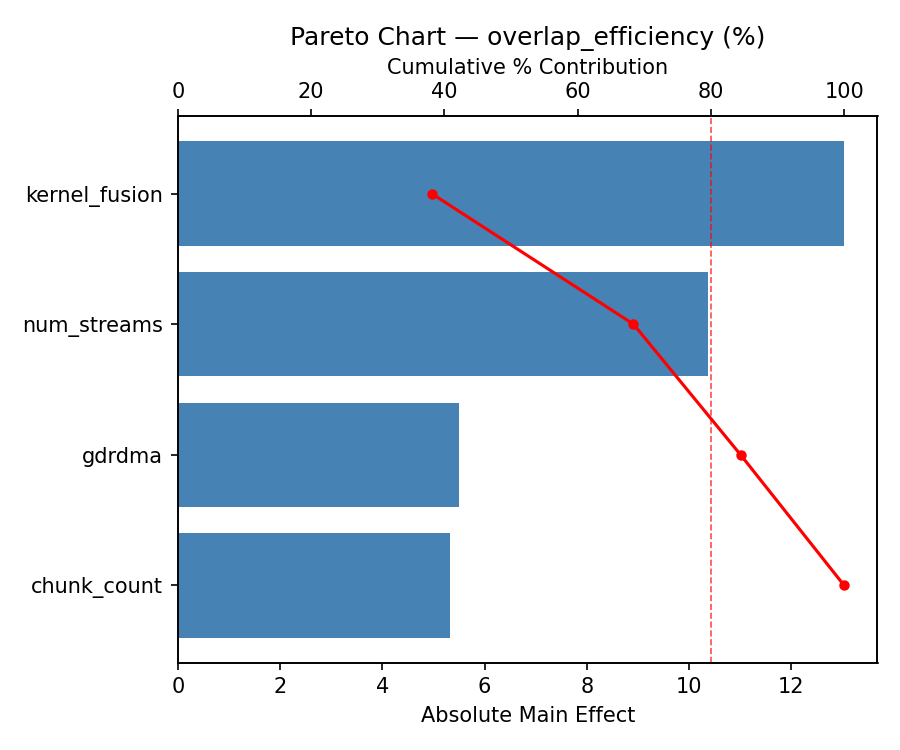
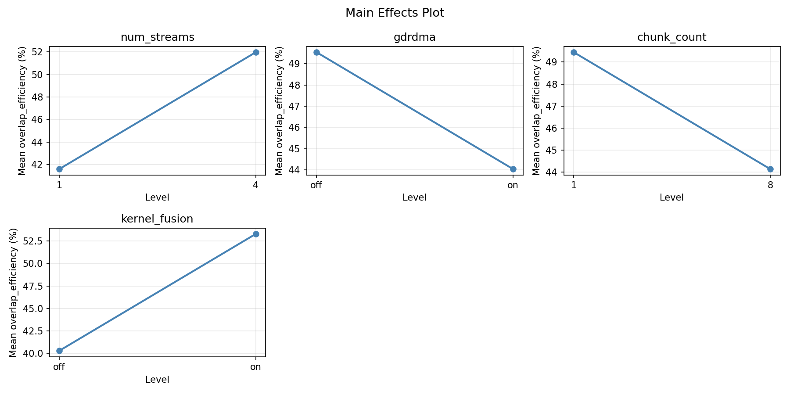
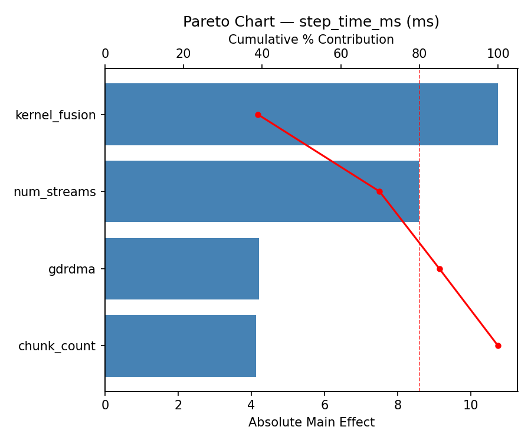
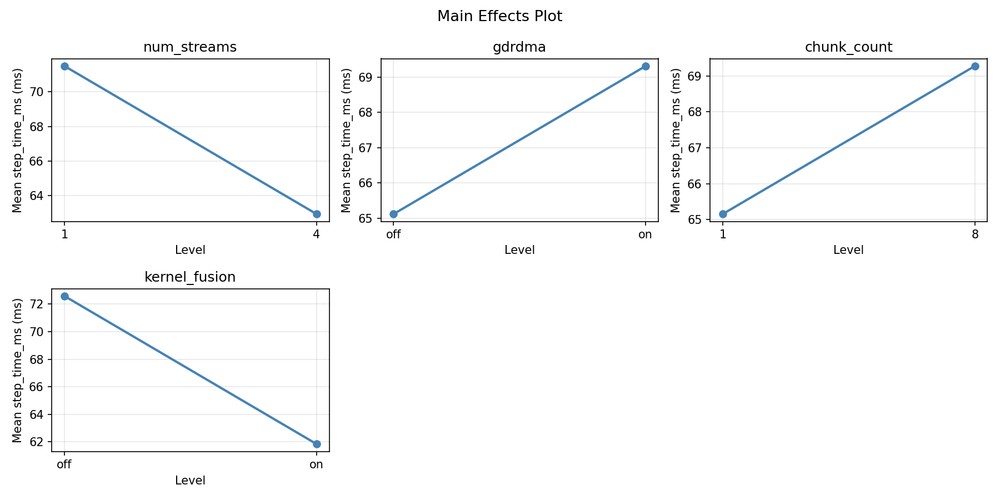
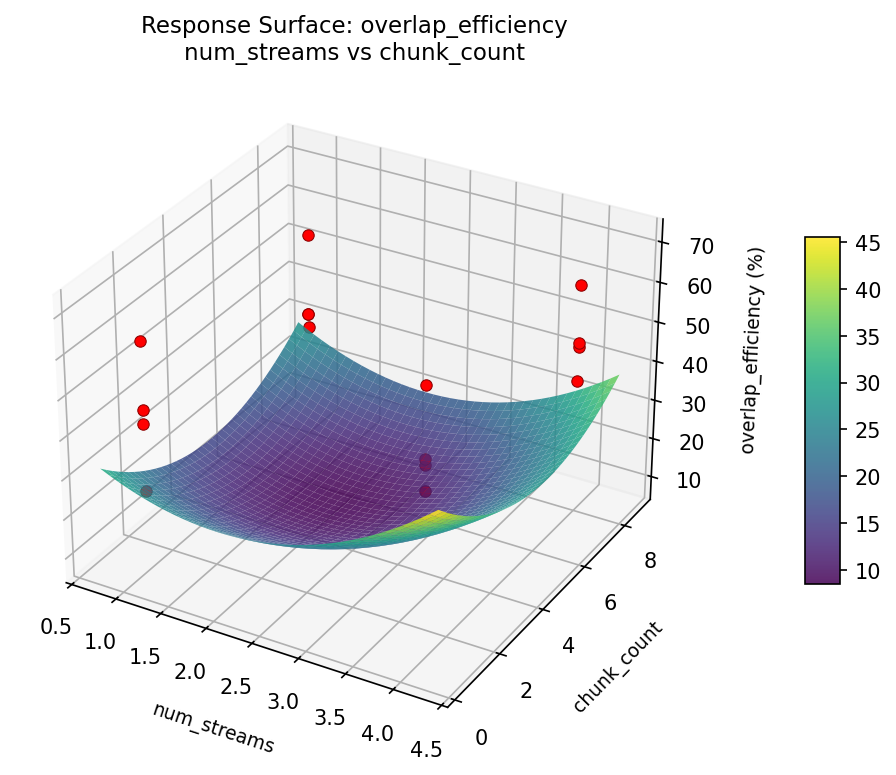
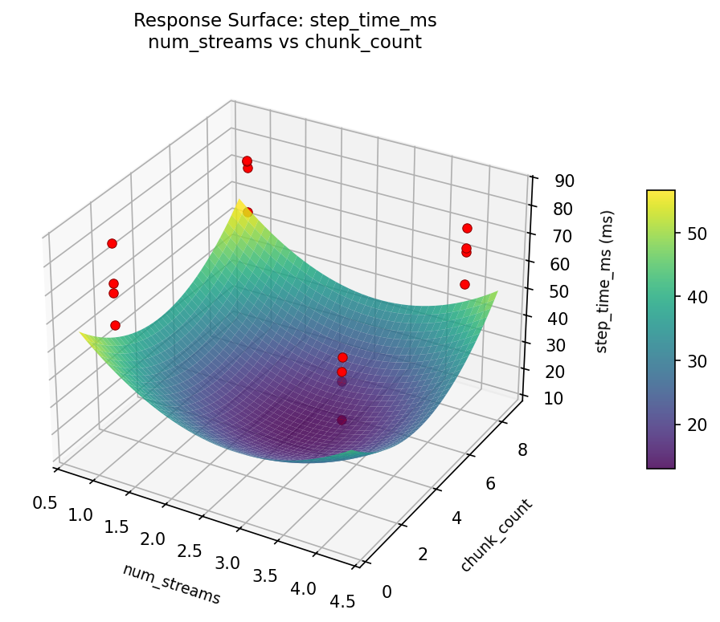

Summary
This experiment investigates gpu compute-communication overlap. Full factorial design to maximize GPU computation and inter-node communication overlap in distributed stencil codes.
The design varies 4 factors: num streams, ranging from 1 to 4, gdrdma, ranging from off to on, chunk count, ranging from 1 to 8, and kernel fusion, ranging from off to on. The goal is to optimize 2 responses: overlap efficiency (%) (maximize) and step time ms (ms) (minimize). Fixed conditions held constant across all runs include gpus = 64, gpu model = H100_SXM, interconnect = NDR_InfiniBand, problem size = 2048^3.
A full factorial design was used to explore all 16 possible combinations of the 4 factors at two levels. This guarantees that every main effect and interaction can be estimated independently, at the cost of a larger experiment (16 runs).
Quadratic response surface models were fitted to capture potential curvature and factor interactions. The RSM contour plots below visualize how pairs of factors jointly affect each response.
Key Findings
For overlap efficiency, the most influential factors were kernel fusion (45.5%), gdrdma (32.0%), num streams (14.5%). The best observed value was 71.12 (at num streams = 1, gdrdma = off, chunk count = 8).
For step time ms, the most influential factors were kernel fusion (51.7%), gdrdma (26.5%), num streams (21.1%). The best observed value was 47.11 (at num streams = 1, gdrdma = off, chunk count = 8).
Recommended Next Steps
- Consider whether any fixed factors should be varied in a future study.
Experimental Setup
Factors
| Factor | Levels | Type | Unit |
|---|
| num_streams | 1 – 4 | continuous | — |
| gdrdma | off / on | categorical | — |
| chunk_count | 1 – 8 | continuous | — |
| kernel_fusion | off / on | categorical | — |
Fixed: gpus = 64, gpu_model = H100 SXM, interconnect = NDR InfiniBand, problem_size = 2048^3
Responses
| Response | Direction | Unit |
|---|
| overlap_efficiency | ↑ maximize | % |
| step_time_ms | ↓ minimize | ms |
Experimental Matrix
The Full Factorial Design produces 16 runs. Each row is one experiment with specific factor settings.
| Run | num_streams | gdrdma | chunk_count | kernel_fusion |
|---|
| 1 | 1 | on | 8 | on |
| 2 | 4 | off | 1 | on |
| 3 | 1 | on | 1 | on |
| 4 | 1 | on | 8 | off |
| 5 | 4 | on | 8 | off |
| 6 | 4 | off | 8 | off |
| 7 | 4 | on | 1 | off |
| 8 | 4 | off | 1 | off |
| 9 | 1 | off | 1 | on |
| 10 | 1 | off | 8 | off |
| 11 | 4 | on | 1 | on |
| 12 | 4 | on | 8 | on |
| 13 | 1 | on | 1 | off |
| 14 | 4 | off | 8 | on |
| 15 | 1 | off | 1 | off |
| 16 | 1 | off | 8 | on |
How to Run
$ doe info --config use_cases/24_gpu_comm_overlap/config.json
$ doe generate --config use_cases/24_gpu_comm_overlap/config.json --output results/run.sh --seed 42
$ bash results/run.sh
$ doe analyze --config use_cases/24_gpu_comm_overlap/config.json
$ doe optimize --config use_cases/24_gpu_comm_overlap/config.json
$ doe optimize --config use_cases/24_gpu_comm_overlap/config.json --multi
$ doe report --config use_cases/24_gpu_comm_overlap/config.json --output report.html
Analysis Results
Generated from actual experiment runs.
Response: overlap_efficiency
Pareto Chart

Main Effects Plot

Response: step_time_ms
Pareto Chart

Main Effects Plot

Response Surface Plots
3D surfaces fitted with quadratic RSM. Red dots are observed data points.
overlap_efficiency: num_streams vs chunk_count

step_time_ms: num_streams vs chunk_count

Full Analysis Output
=== Main Effects: overlap_efficiency ===
Factor Effect Std Error % Contribution
--------------------------------------------------------------
kernel_fusion -12.7575 3.0791 56.6%
gdrdma -4.9700 3.0791 22.0%
num_streams -2.7900 3.0791 12.4%
chunk_count 2.0400 3.0791 9.0%
=== Interaction Effects: overlap_efficiency ===
Factor A Factor B Interaction % Contribution
------------------------------------------------------------------------
gdrdma chunk_count -10.5825 33.9%
chunk_count kernel_fusion -9.8300 31.5%
gdrdma kernel_fusion -3.8400 12.3%
num_streams chunk_count -3.6825 11.8%
num_streams gdrdma -2.2225 7.1%
num_streams kernel_fusion -1.0400 3.3%
=== Summary Statistics: overlap_efficiency ===
num_streams:
Level N Mean Std Min Max
------------------------------------------------------------
1 8 48.1863 13.4865 32.1300 71.1200
4 8 45.3963 11.7783 24.5600 61.8500
gdrdma:
Level N Mean Std Min Max
------------------------------------------------------------
off 8 49.2763 12.9130 35.7000 71.1200
on 8 44.3062 12.0084 24.5600 62.0000
chunk_count:
Level N Mean Std Min Max
------------------------------------------------------------
1 8 45.7713 8.3288 35.7000 62.0000
8 8 47.8113 15.9158 24.5600 71.1200
kernel_fusion:
Level N Mean Std Min Max
------------------------------------------------------------
off 8 53.1700 11.5749 35.7000 71.1200
on 8 40.4125 9.9036 24.5600 53.5800
=== Main Effects: step_time_ms ===
Factor Effect Std Error % Contribution
--------------------------------------------------------------
kernel_fusion 10.7475 2.5064 55.8%
gdrdma 3.8800 2.5064 20.2%
num_streams 2.4975 2.5064 13.0%
chunk_count -2.1250 2.5064 11.0%
=== Interaction Effects: step_time_ms ===
Factor A Factor B Interaction % Contribution
------------------------------------------------------------------------
gdrdma chunk_count 8.2026 32.6%
chunk_count kernel_fusion 7.9900 31.8%
num_streams chunk_count 3.7750 15.0%
gdrdma kernel_fusion 2.6250 10.4%
num_streams kernel_fusion 1.5425 6.1%
num_streams gdrdma 1.0100 4.0%
=== Summary Statistics: step_time_ms ===
num_streams:
Level N Mean Std Min Max
------------------------------------------------------------
1 8 65.9675 10.6844 47.1100 78.0900
4 8 68.4650 9.8823 54.5400 85.2000
gdrdma:
Level N Mean Std Min Max
------------------------------------------------------------
off 8 65.2763 10.9366 47.1100 78.1600
on 8 69.1562 9.3364 56.5000 85.2000
chunk_count:
Level N Mean Std Min Max
------------------------------------------------------------
1 8 68.2788 6.1498 56.5000 75.6200
8 8 66.1538 13.2280 47.1100 85.2000
kernel_fusion:
Level N Mean Std Min Max
------------------------------------------------------------
off 8 61.8425 9.1360 47.1100 75.6200
on 8 72.5900 8.1185 60.6400 85.2000
Optimization Recommendations
=== Optimization: overlap_efficiency ===
Direction: maximize
Best observed run: #12
num_streams = 1
gdrdma = off
chunk_count = 8
kernel_fusion = off
Value: 71.12
Factor importance:
1. gdrdma (effect: -4.2, contribution: 29.9%)
2. chunk_count (effect: 4.0, contribution: 28.5%)
3. num_streams (effect: -3.8, contribution: 26.8%)
4. kernel_fusion (effect: 2.1, contribution: 14.8%)
=== Optimization: step_time_ms ===
Direction: minimize
Best observed run: #12
num_streams = 1
gdrdma = off
chunk_count = 8
kernel_fusion = off
Value: 47.11
Factor importance:
1. num_streams (effect: 4.0, contribution: 34.2%)
2. gdrdma (effect: 3.3, contribution: 28.6%)
3. chunk_count (effect: -2.5, contribution: 21.4%)
4. kernel_fusion (effect: -1.8, contribution: 15.8%)
Multi-Objective Optimization
When responses compete, Derringer–Suich desirability finds the best compromise.
Each response is scaled to a 0–1 desirability, then combined via a weighted geometric mean.
Overall Desirability
D = 0.9545
Per-Response Desirability
| Response | Weight | Desirability | Predicted | Dir |
|---|
overlap_efficiency |
1.5 |
|
71.12 0.9545 71.12 % |
↑ |
step_time_ms |
1.0 |
|
47.11 0.9545 47.11 ms |
↓ |
Recommended Settings
| Factor | Value |
|---|
num_streams | 4 |
gdrdma | off |
chunk_count | 8 |
kernel_fusion | on |
Source: from observed run #12
Trade-off Summary
Sacrifice = how much worse than single-objective best.
| Response | Predicted | Best Observed | Sacrifice |
|---|
step_time_ms | 47.11 | 47.11 | +0.00 |
Top 3 Runs by Desirability
| Run | D | Factor Settings |
|---|
| #5 | 0.7750 | num_streams=4, gdrdma=on, chunk_count=8, kernel_fusion=off |
| #11 | 0.7577 | num_streams=1, gdrdma=off, chunk_count=1, kernel_fusion=off |
Model Quality
| Response | R² | Type |
|---|
step_time_ms | 0.1129 | linear |
Full Multi-Objective Output
============================================================
MULTI-OBJECTIVE OPTIMIZATION
Method: Derringer-Suich Desirability Function
============================================================
Overall desirability: D = 0.9545
Response Weight Desirability Predicted Direction
---------------------------------------------------------------------
overlap_efficiency 1.5 0.9545 71.12 % ↑
step_time_ms 1.0 0.9545 47.11 ms ↓
Recommended settings:
num_streams = 4
gdrdma = off
chunk_count = 8
kernel_fusion = on
(from observed run #12)
Trade-off summary:
overlap_efficiency: 71.12 (best observed: 71.12, sacrifice: +0.00)
step_time_ms: 47.11 (best observed: 47.11, sacrifice: +0.00)
Model quality:
overlap_efficiency: R² = 0.1046 (linear)
step_time_ms: R² = 0.1129 (linear)
Top 3 observed runs by overall desirability:
1. Run #12 (D=0.9545): num_streams=4, gdrdma=off, chunk_count=8, kernel_fusion=on
2. Run #5 (D=0.7750): num_streams=4, gdrdma=on, chunk_count=8, kernel_fusion=off
3. Run #11 (D=0.7577): num_streams=1, gdrdma=off, chunk_count=1, kernel_fusion=off